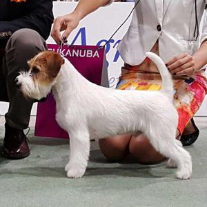
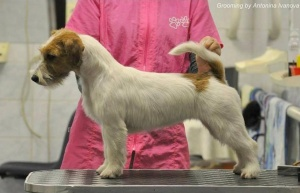

LOVELY-ORANGE RED HOT CHILLY PEPPER (Richie) Кобель джек рассел терьера / jack russell
terrier male
Полная родословная FCI-RKF / full
pedigree FCI-RKF
Дата рождения/Birth Date: 15.02.2016
Окрас/color: бело-рыжий/white & red
Тип шерсти/wool type: жесткошерстный/rougth
Рост/height: 30 см, в ес/weight: 7 кг
Зубы/teeth: полнозубый/full
teeth
TESTS:
PLL - genotype N / N
(clear) LOA - genotype N / N
(clear) SCA - genotype N / N
(clear)
Patella Luxation -
0/0
Отец/father:
INT CH JACKANDFISH AND
GEK RAZ (Италия/Italy)
Мать/mother:
INT CH MULTI CH
LOVELY-ORANGE X-CHECK AND MATE (Россия/Russia)
Титулы/titles (FCI):
INTERCHAMPION
B.B.B. - BEST OF THE BEST OF BREED IN UKRAINE (Best
Representative of the Breed in Ukraine)
JUNIOR CHAMPION OF UKRAINE
3xCHAMPION OF UKRAINE
CHAMPION OF BULGARIA
CHAMPION OF MOLDOVA
GRAND CHAMPION OF MOLDOVA
3xBEST PUPPY
BIG-4
8xBOB
6xBOS
6xCACIB
3xJCAC
19xCAC
R.CAC (CACIB within the framework of the Euro Dog
Show-2017, intermedia class)
CAC, Best Male, BOB (CAC within the
framework of the Euro Dog Show-2017, Open class)
EXCELLENT-4/10 (Euro Dog Show-2017, intermedia
class)
Crufts Qualification-2019
Заводчик/Breeder: Ольга Серова/Olga Serova,
г. Москва/Moscow, Россия/Russia, тел./phone: +7926-206-5927
Владелец/Owner: Зинкевич Екатерина/Zinkevych Kateryna, г. Киев/Kiev, Украина/Ukraine
тел./phone: +38 067 502 92 17
ФОТО/FOTO
ВИДЕО/VIDEO
Родословная LOVELY-ORANGE RED HOT CHILLY PEPPER построена на австралийских, итальянских,
норвежских, датских, французских, испанских кровях Мульти и Интер Чемпионов. Среди них такие
легендарные представители как Мультичемпионы, Интерчемпионы и многократные победители выставок
JACKANDFISH AND GEK
RAZ , LOVELY-ORANGE
X-CHECK AND
MATE , KANIX SPEED
WAGON , KANIX 2 MUCH
GOSSIP , KNOTTELITEN'S DIAMOND
DEE , JAMES BOND Z HRADU
PIHLOV , LOVELY-ORANGE DE
BARBA NEGRA , DANDEE
DOMINIK , LANTAKA
POLEPOSITION , SIEGER'S BLA BLA
BLA .
Parents of LOVELY-ORANGE RED HOT CHILLY
PEPPER:
Father: JACKANDFISH AND GEK
RAZ (Italy)
birthdate
04.06.2014
height
28 cm
color
white & red
coat
rough
teeth
scissors bite, full dentition
BEST MALE on CRUFT`S-2019, rWORLD WINNER
2018, R. WOLRD
WINNER-2016 EUROPEAN
JUNIOR WINNER-2015 (BOB ), JUNIOR ITALIAN CH, ITALIAN
CHAMPION, RUSSIAN CHAMPION, NORWEGIAN CHAMPION, RSM CHAMPION, JUNIOR IT CLUB SHOW WINNER
2015, IT CLUB SHOW WINNER 2015, JUNIOR ITALIAN TOP DOG 2015, ITALIAN TOP DOG 2015, ITALIAN
TOP DOG 2016, ITALIAN TOP TERRIER 2016, INTERNATIONAL CHAMPION, INSUBRIA WINNER 2016, ROMA
WINNER 2016 
Mother: LOVELY-ORANGE
X-CHECK AND MATE
(Russia)
birthdate
17.07.2012
height
28 cm
color
white & red
coat
rough
teeth
scissors bite, full dentition
med.tests
PLL: clear
WOLRD
WINNER-2016 , VICE JUNIOR WORLD WINNER-2013 , ex 3 INTERRA`13, JCH
RUSSIA, JCH CLUB, JCH LT, CH RUSSIA, CH SWEDEN, CH FINLAND, CH ITALIANO, CH CLUB, CH Czech, СР
RKF, CH EURASIA`14, Candidat of Slovenia Ch, Candidat of Poland Ch, Candidat of Chroatia Ch (3
cac), Candidat of International CH, Artificial earth (fox)
Родословная/Pedigree - LOVELY-ORANGE RED HOT CHILLY PEPPER
JUNIOR CHAMPION OF UKRAINE
CHAMPION OF UKRAINE
CHAMPION OF MOLDOVA
GRAND CHAMPION OF MOLDOVA
Candidate in B.B.B. - BEST OF THE BEST OF BREED IN
UKRAINE
3xBEST PUPPY
BIG-4
7xBOB
6xBOS
4xCACIB
3xJCAC
13xCAC
R.CAC (CACIB within the framework of the Euro Dog Show-2017,
intermedia class)
CAC, Best
Male, BOB (CAC within the framework of the Euro Dog
Show-2017, Open class)
EXCELLENT-4/10 (Euro Dog Show-2017, intermedia class)
LOVELY-ORANGE RED HOT CHILLY PEPPER
JUNIOR ITALIAN CH, EUROPEAN JUNIOR WINNER
2015-BOB, ITALIAN CHAMPION, RUSSIAN CHAMPION, NORWEGIAN CHAMPION, RSM CHAMPION, JUNIOR IT CLUB
SHOW WINNER 2015, IT CLUB SHOW WINNER 2015, JUNIOR ITALIAN TOP DOG 2015, ITALIAN TOP DOG 2015,
rWORLD WINNER 2016, rWORLD WINNER 2018, ITALIAN TOP DOG 2016, ITALIAN TOP TERRIER 2016, RSM
TOPDOG 2016, INTERNATIONAL CHAMPION, INSUBRIA WINNER 2016, ROMA WINNER 2016, MEDITERRANEAN
WINNER 2017, BIS WINNER, BISS WINNER
JACKANDFISH AND GEK RAZ
JUNIOR ITALIAN CHAMPION, ITALIAN CHAMPION, REPRODUCER
CHAMPION, vEUROPEAN CHAMPION 2013, SWEDEN CHAMPION, RUSSIAN CHAMPION, RKF CHAMPION, EURASIA WINNER
2014
KANIX 2 MUCH GOSSIP
Danish Kennel Club Winner 2008 Copenhagen Winner 2008
Nordic Winner 2008 Interra Winner 2008 Rostock Sieger 2008 Winner of Winners 2007 International
Champion Nordic Champion Danish Champion Norwegian Champion Swedish Champion Polish Champion
Gibraltar Champion Club Champion Nordic Winner 2007 Danish Kennel Club Winner 2007 Copenhagen
Winner 2007 Double Danish Kennel Club Jubilee Winner 2007 Danish Terrier Club Jubilee Winner 2007
World Winner 2006 Nordic Winner 2006 Polish Winner 2006 Copenhagen Winner 2006 Club Winner 2006
Danish Kennel Club Winner 2006 Norwegian Winner 2005 Swedish Winner 2005 Copenhagen Winner 2005
Danish Kennel club Winner 2005 Club Winner 2005 Youth European Winner 2005 ( BOB &
BOG)
KANIX SPEED WAGON
CH AUS,SUCH, ITALIAN CH.
BEACONWAY SCOTCH N'COKE
AU CH
HOCUSPOCUS PERCIVAL
MALUNG/JR MERRYLEGS
Danish Champion
FUTURE OF NOESCHA'S INSPIRATION
CH
BAYLOCK SON O'PLONK
AMELIA MAXIME OF THE HUNTERS PRIDE
ABSOLUTE AIDA OF MAYO LAND
MultiCh
UN SACRE MEC OF MAYO LAND
INTUCH, NL / GR CH, Champion Holandia,
Interchampion
IMLAY BLACK FORREST
SACRE MAYO LAND OF THE HUNTERS PRIDE
CH
UNE SUPER NANA OF MAYO LAND
AU CH
ROSETTA/JR ROOKEE
Res WW'03 ,Res EW'02, France champion, Spain champion, Luxembourg
champion, Top Jack France'02
DEJA VU JOURNEY OF THE HUNTERS PRIDE
KNOTTELITEN'S NAUGHTY BUT NICE
SV-10, DKV-10, AMSV-10
KANIX FAST TRACK
HITI DANDY DUVET
Danish Kennel Club Winner 2008 Copenhagen Winner 2008 Nordic Winner
2008 Interra Winner 2008 Rostock Sieger 2008 Winner of Winners 2007 International Champion Nordic
Champion Danish Champion Norwegian Champion Swedish Champion Polish Champion Gibraltar Champion
Club Champion Nordic Winner 2007 Danish Kennel Club Winner 2007 Copenhagen Winner 2007 Double
Danish Kennel Club Jubilee Winner 2007 Danish Terrier Club Jubilee Winner 2007 World Winner 2006
Nordic Winner 2006 Polish Winner 2006 Copenhagen Winner 2006 Club Winner 2006 Danish Kennel Club
Winner 2006 Norwegian Winner 2005 Swedish Winner 2005 Copenhagen Winner 2005 Danish Kennel club
Winner 2005 Club Winner 2005 Youth European Winner 2005 ( BOB & BOG)
KANIX SPEED WAGON
ABSOLUTE AIDA OF MAYO LAND
WJW-08 WW-09 DKCH, NOUCH,
Int.UCH
SIEGER'S BLA BLA BLA
Danish Kennel Club Winner 2008 Copenhagen Winner 2008 Nordic Winner
2008 Interra Winner 2008 Rostock Sieger 2008 Winner of Winners 2007 International Champion Nordic
Champion Danish Champion Norwegian Champion Swedish Champion Polish Champion Gibraltar Champion
Club Champion Nordic Winner 2007 Danish Kennel Club Winner 2007 Copenhagen Winner 2007 Double
Danish Kennel Club Jubilee Winner 2007 Danish Terrier Club Jubilee Winner 2007 World Winner 2006
Nordic Winner 2006 Polish Winner 2006 Copenhagen Winner 2006 Club Winner 2006 Danish Kennel Club
Winner 2006 Norwegian Winner 2005 Swedish Winner 2005 Copenhagen Winner 2005 Danish Kennel club
Winner 2005 Club Winner 2005 Youth European Winner 2005 ( BOB & BOG)
KANIX SPEED WAGON
Dkch KBHV 05
WINTERBOURNE PURE VANITY
Nord.uch, NORDJV-09, NORDV-09, JVV-10, NV-10, DKV-10,
AMSV-10
KNOTTELITEN'S DIAMOND DEE
NORWEGIAN CHAMPION '09
TOUCHSTAR MAGICIAN
Multi Champion Interra Winner '05 BIS terrier club Luxembourg 05
Vice European champion 05
ULTRA PRIDE OF MAYO LAND
Чемпион Италии
LANTAKA ATHENA
KNOTTELITENS JAMAICA RUM
Danish Kennel Club Winner 2008 Copenhagen Winner 2008 Nordic Winner
2008 Interra Winner 2008 Rostock Sieger 2008 Winner of Winners 2007 International Champion Nordic
Champion Danish Champion Norwegian Champion Swedish Champion Polish Champion Gibraltar Champion
Club Champion Nordic Winner 2007 Danish Kennel Club Winner 2007 Copenhagen Winner 2007 Double
Danish Kennel Club Jubilee Winner 2007 Danish Terrier Club Jubilee Winner 2007 World Winner 2006
Nordic Winner 2006 Polish Winner 2006 Copenhagen Winner 2006 Club Winner 2006 Danish Kennel Club
Winner 2006 Norwegian Winner 2005 Swedish Winner 2005 Copenhagen Winner 2005 Danish Kennel club
Winner 2005 Club Winner 2005 Youth European Winner 2005 ( BOB & BOG)
KANIX SPEED WAGON
MALUNG/JR MANNEQUIN
WOLRD WINNER-2016, VICE JUNIOR WORLD WINNER-2013, ex 3
INTERRA`13, JCH RUSSIA, JCH CLUB, JCH LT, CH RUSSIA, CH SWEDEN, CH FINLAND, CH ITALIANO, CH CLUB,
CH Czech, СР RKF, CH EURASIA`14, Candidat of Slovenia Ch, Candidat of Poland Ch, Candidat of
Chroatia Ch (3 cac), Candidat of International CH, Artificial earth (fox)
LOVELY-ORANGE X-CHECK AND MATE
C.I.B. Junior world winner 2011,cz ch,jr cz, Grand
Champ CZ, Champ CZ, Champ-Jun CZ, BOB 3x, CACIB 3x, res.CACIB 2x, Club winner, Winner of KCHT CZ,
Europa-Jgd-Sg.VDH, Best Junior, CAC CMKU 3x, Anw.Dr.Jug. Ch.VDH, Jg-CACA
ch.
JAMES BOND Z HRADU PIHLOV
ChNL, ChB.
ERUS V.H. INSULA MARIS
AU CH
ROSETTA/JR ROOKEE
AU GRAND CH
COLEANN BROWN LAGAR
CH
ROSETTA JR RADIANCE
KINGPARK MATTER OF HONOR
CH
MACBRAEDLY UNION JACK
JAYARE LILLI MARLENE
MULTI CH.
HALIE Z HRADU PIHLOV
pl JCH
ALI ABABOUA OF MAYO LAND
AU CH NL CH
BRAPEREMI WHATSHISNAME
SACRE MAYO LAND OF THE HUNTERS PRIDE
DARLA OD EVY
Multichampion Interchampion Best JRT CZ - 2005, 2006, 2007 Junior
champion CZ, SK Champion od Slovakia Champion Serbia & Montenegro Interra Champion Club
Champion of Slovakia Club Champion of Czech Republic expectant of championships of Austria,
Slovenia, Croatia CZ Junior Club Winner Junior Winner of Special Terriers Show Junior Winner of
Mid and East Europa Club Winner of SK, CZ, Serbia & Montenegro, Austria 2x Winner of CZ
Special Terriers Show Winner of Special Terriers Show of Serbia & Montenegro Bundessieger
Interra Winner 2x National Winner Winner of Slovakia 6x CAJC, 35x CAC, 3x CWC, 7x CC, 3x CACA, 13x
CACIB, 20x BOB
LANTAKA POLEPOSITION
AGATA OD EVY
LOVELY-ORANGE EXOTIC BUTTERFLY
JCH RUS, JCH LT, JCH LAT, JCH EST,
CH RUS, CH RKF, CH LT, BALTIK WINNER 2010 JCAC* 9, CAC* 11, CACIB* 2
DANDEE DOMINIK
Grand Ch.
PRETORIUM JUST U ARE IT
CH-AUST
MACULLEN JACK FLASH
Ch.AUS
PRETORIUM JUST REANA
2ХCACIB, 2ХCAC, JCAC
FACTORY EFFEX RAGS PUMA
2ХCACIB, BOB, 3ХCAC
SALTO
INVERBRAE MAHOGANY FLEUR
Юный Чемпион России, Юный Чемпион НКП 2009, Терьер Союз
России 3 ЮСС, Юный Чемпион Литвы, Юный Чемпион Терьер Союза Литвы, Юный Чемпион Болгарии, Юный
Чемпион Черногории, Юный Чемпион Румынии, Юный Чемпион Македонии, Юный Чемпион Балканских Стран,
Гранд Чемпион России, Чемпион России, Чемпион Молдавии, Чемпион Литвы, Чемпион Национального
Клуба, Чемпион РКФ, Призер Интерра 2009 Словакия Best Baby 2, Best Puppy 4, BJ 4, CW 19, JCAC 8,
CACIB 4, RCACIB 5BOB 6, BIG 2-1, BIG 1-1, BIS-3 Международный рабочий сертификат по
лисице.
LOVELY-ORANGE DE BARBA NEGRA
I. POHJ. JV-05, EST JV-05, EST
JMVA
MALLORN'S JACK DUNDEE
Fi & Ee Ch
MACULLEN BANJO BOY
MYRMIDON JACK MELLE
Spanish Champion, Finnish Champion, Swedish Champion,
Russian Champion
SUPER NOVA DE BARBA NEGRA
CH Fin CH Au, SH Swe, CH Est
MYRMIDON JACK MACK
SP, E CH
MYRMIDON JACK ELEKTRA
кобель джек рассел терьер вязка, вязка джек рассел терьера,
кобель джек рассел терьера на вязку, джек рассел терьер племенной кобель, джек рассел терьер кобель
интерчемпион вязка, вязка джек рассел терьера
питомник, кобель для вязки джек рассел терьер киев украина, jack russell terrier male stud, jrt stud male,
джек расел тер`єр
04 дек 2020 . 18 мая
2016